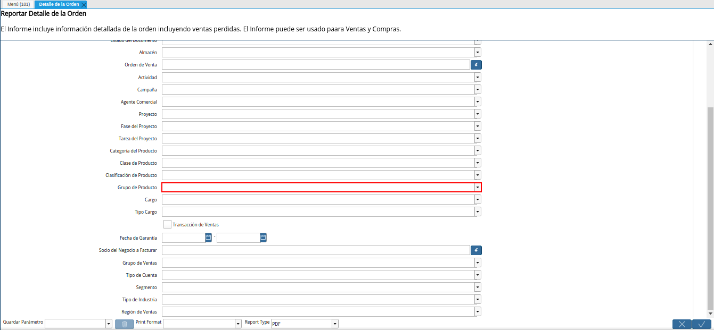

4.4. Detalle de la Orden¶
Ubique y seleccione en el menú de ADempiere, la carpeta “Gestión de Ventas”, luego seleccione la carpeta “Órdenes de Venta”, por último seleccione el reporte “Detalle de la Orden”.
Imagen 1. Menú de ADempiere
Podrá visualizar la ventana del reporte “Detalle de la Orden”, con diferentes campos que le permiten al usuario filtrar la información del reporte en base a lo requerido por el mismo.
Imagen 2. Ventana del Reporte Detalle de la Orden
Seleccione en el campo “Tipo de Documento”, el tipo de documento por el cual requiere filtrar la información.
Imagen 3. Campo Tipo de Documento
Seleccione en el campo “Socio del Negocio”, el socio del negocio por el cual requiere filtrar la información.
Imagen 4. Campo Socio del Negocio
Seleccione en el campo “Producto”, el producto por el cual requiere filtrar la información.
Imagen 5. Campo Producto
Seleccione en el campo “Fecha de la Orden”, el rango de fecha de la orden por el cual requiere filtrar la información.
Imagen 6. Campo Fecha de la Orden
Seleccione en el campo “Moneda”, la moneda por la cual requiere filtrar la información.
Imagen 7. Campo Moneda
Seleccione en el campo “Fecha Prometida”, el rango de fecha prometida de la orden por el cual requiere filtrar la información.
Imagen 8. Campo Fecha Prometida
Seleccione en el campo “Estado del Documento”, el estado del documento por el cual requiere filtrar la información.
Imagen 9. Campo Estado del Documento
Seleccione en el campo “Almacén”, el almacén por el cual requiere filtrar la información.
Imagen 10. Campo Almacén
Seleccione en el campo “Orden de Venta”, la orden de compra o venta por la cual requiere filtrar la información.
Imagen 11. Campo Orden de Venta
Seleccione en el campo “Actividad”, la actividad por la cual requiere filtrar la información.
Imagen 12. Campo Actividad
Seleccione en el campo “Campaña”, la campaña por la cual requiere filtrar la información.
Imagen 13. Campo Campaña
Seleccione en el campo “Agente Comercial”, el agente comercial por el cual requiere filtrar la información.
Imagen 14. Campo Agente Comercial
Seleccione en el campo “Proyecto”, el proyecto por el cual requiere filtrar la información.
Imagen 15. Campo Proyecto
Seleccione en el campo “Fase del Proyecto”, la fase del proyecto por la cual requiere filtrar la información.
Imagen 16. Campo Fase del Proyecto
Seleccione en el campo “Tarea del Proyecto”, la tarea del proyecto por la cual requiere filtrar la información.
Imagen 17. Campo Tarea del Proyecto
Seleccione en el campo “Categoría del Producto”, la cateoría del producto por la cual requiere filtrar la información.
Imagen 18. Campo Categoría del Producto
Seleccione en el campo “Clase de Producto”, la clase de producto por la cual requiere filtrar la información.
Imagen 19. Campo Clase de Producto
Seleccione en el campo “Clasificación de Producto”, la clasificación de producto por la cual requiere filtrar la información.
Imagen 20. Campo Clasificación de Producto
Seleccione en el campo “Grupo de Producto”, el grupo de producto por el cual requiere filtrar la información.

Imagen 21. Campo Grupo de Producto
Seleccione en el campo “Cargo”, el cargo por el cual requiere filtrar la información.
Imagen 22. Campo Cargo
Seleccione en el campo “Tipo de Cargo”, el tipo de cargo por el cual requiere filtrar la información.
Imagen 23. Campo Tipo de Cargo
Tilde el check “Transacción de Ventas”, para filtrar la información por transacciones de ventas.
Imagen 24. Check Transacción de Ventas
Seleccione en el campo “Fecha de Garantía”, la fecha de garantía por la cual requiere filtrar la información.
Imagen 25. Campo Fecha de Garantía
Seleccione en el campo “Socio del Negocio a Facturar”, el socio del negocio a facturar por el cual requiere filtrar la información.
Imagen 26. Campo Socio del Negocio a Facturar
Seleccione en el campo “Grupo de Ventas”, el grupo de ventas por el cual requiere filtrar la información.
Imagen 27. Campo Grupo de Ventas
Seleccione en el campo “Tipo de Cuenta”, el tipo de cuenta por el cual requiere filtrar la información.
Imagen 28. Campo Tipo de Cuenta
Seleccione en el campo “Segmento”, el segmento por el cual requiere filtrar la información.
Imagen 29. Campo Segmento
Seleccione en el campo “Tipo de Industria”, el tipo de industria por el cual requiere filtrar la información.
Imagen 30. Campo Tipo de Industria
Seleccione en el campo “Región de Ventas”, la región de ventas por la cual requiere filtrar la información.
Imagen 31. Campo Región de Ventas
Seleccione la opción “OK”, para generar el reporte “Detalle de la Orden”, en base a los campos seleccionados anteriormente.
Imagen 32. Opción OK
Podrá visualizar el reporte de la siguiente manera. La información del mismo puede variar dependiendo de los campos o filtros de búsqueda seleccionados.
Imagen 32. Reporte Detalle de la Orden